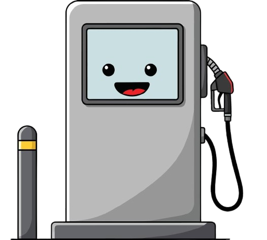

How the Dashboard Works
- Data Collection: Information is gathered from sources like Google Places API and sentiment datasets from user reviews across petrol stations in Malaysia.
- ETL Pipeline: Using Apache Spark with Docker, raw data is cleaned, transformed, and organized into structured formats.
- Sentiment Analysis: Reviews are analyzed with NLP techniques to classify user opinions into positive, negative, or neutral sentiments.
- Service & Facility Mapping: Data includes filters such as toilet availability, surau, convenience store, EV charging, car wash, and fuel types.
- Interactive Dashboard: All insights are visualized using Power BI with charts, ratings, and maps so users can easily compare and explore petrol stations.
- User-Centered Design: Clean UI allows seamless navigation, making the experience mobile-friendly and intuitive for travelers.